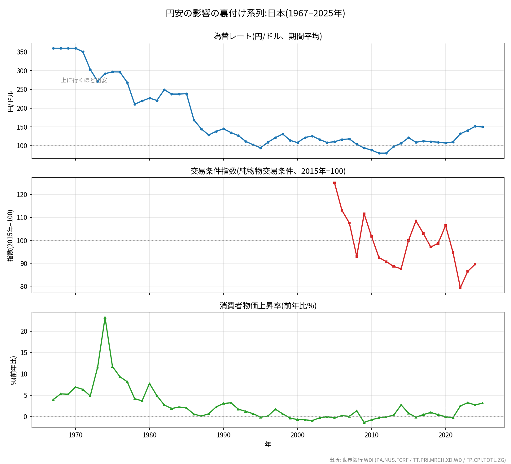

世界銀行 World Development Indicators のデータに基づく、日本のGNP(国民総所得 = GNI)の推移です。

| 年 | GNP(兆米ドル) | GNP(米ドル) |
|---|---|---|
| 1967 | 0.134 | 133922438816 |
| 1968 | 0.159 | 158527592858 |
| 1969 | 0.186 | 186259796817 |
| 1970 | 0.22 | 219637885956 |
| 1971 | 0.248 | 248285182762 |
| 1972 | 0.329 | 329271765605 |
| 1973 | 0.447 | 447407384621 |
| 1974 | 0.496 | 495629315286 |
| 1975 | 0.539 | 539364284732 |
| 1976 | 0.606 | 606267006517 |
| 1977 | 0.746 | 746486589620 |
| 1978 | 1.05 | 1049724780341 |
| 1979 | 1.094 | 1093593575062 |
| 1980 | 1.144 | 1144004380575 |
| 1981 | 1.263 | 1262550628034 |
| 1982 | 1.176 | 1176126780614 |
| 1983 | 1.284 | 1283888538586 |
| 1984 | 1.365 | 1365496990563 |
| 1985 | 1.463 | 1462883630361 |
| 1986 | 2.167 | 2166529105891 |
| 1987 | 2.631 | 2630759782456 |
| 1988 | 3.193 | 3192627860114 |
| 1989 | 3.197 | 3197023303374 |
| 1990 | 3.288 | 3287597955302 |
| 1991 | 3.747 | 3747414797245 |
| 1992 | 4.089 | 4089343929648 |
| 1993 | 4.687 | 4687461189295 |
| 1994 | 5.146 | 5145625871998 |
| 1995 | 5.687 | 5686768814666 |
| 1996 | 5.081 | 5080805044351 |
| 1997 | 4.639 | 4638743905533 |
| 1998 | 4.201 | 4200972764281 |
| 1999 | 4.746 | 4745904546524 |
| 2000 | 5.114 | 5114258273752 |
| 2001 | 4.507 | 4506806200007 |
| 2002 | 4.307 | 4306993492200 |
| 2003 | 4.646 | 4646434378329 |
| 2004 | 5.036 | 5035958888283 |
| 2005 | 4.983 | 4982850382242 |
| 2006 | 4.771 | 4771111262063 |
| 2007 | 4.765 | 4765108468113 |
| 2008 | 5.297 | 5297466609262 |
| 2009 | 5.47 | 5469764379861 |
| 2010 | 5.965 | 5965040392231 |
| 2011 | 6.461 | 6460737427412 |
| 2012 | 6.507 | 6507042694349 |
| 2013 | 5.452 | 5451622637622 |
| 2014 | 5.168 | 5167823225046 |
| 2015 | 4.709 | 4709298924741 |
| 2016 | 5.284 | 5284490989325 |
| 2017 | 5.221 | 5220677954612 |
| 2018 | 5.347 | 5347130951340 |
| 2019 | 5.446 | 5446274833462 |
| 2020 | 5.375 | 5374617140524 |
| 2021 | 5.466 | 5466430651769 |
| 2022 | 4.711 | 4711073463924 |
| 2023 | 4.637 | 4637104412386 |
| 2024 | 4.445 | 4445039871224 |
| 2025 | 4.715 | 4715125918958 |
出所: 世界銀行 WDI (NY.GNP.MKTP.CD) / CSVをダウンロード

| 年 | 名目GNP(兆円) | 実質GNP(兆円、2015年価格) | 備考 |
|---|---|---|---|
| 1967 | 48.2 | 149.8 | 推計 |
| 1968 | 57.1 | 169 | 推計 |
| 1969 | 67.1 | 190.1 | 推計 |
| 1970 | 79.1 | 191 | 推計 |
| 1971 | 87.1 | 200.1 | 推計 |
| 1972 | 99.8 | 217.3 | 推計 |
| 1973 | 121.6 | 234.7 | 推計 |
| 1974 | 144.8 | 231.4 | 推計 |
| 1975 | 160.1 | 238.7 | 推計 |
| 1976 | 179.8 | 248.3 | 推計 |
| 1977 | 200.4 | 259.3 | 推計 |
| 1978 | 220.9 | 273.2 | 推計 |
| 1979 | 239.7 | 288.4 | 推計 |
| 1980 | 259.4 | 296.1 | 推計 |
| 1981 | 278.4 | 308.8 | 推計 |
| 1982 | 292.9 | 319.4 | 推計 |
| 1983 | 304.9 | 329.1 | 推計 |
| 1984 | 324.3 | 345.4 | 推計 |
| 1985 | 349 | 367.3 | 推計 |
| 1986 | 365.1 | 378.3 | 推計 |
| 1987 | 380.5 | 395.2 | 推計 |
| 1988 | 409.1 | 422.8 | 推計 |
| 1989 | 441.1 | 446.3 | 推計 |
| 1990 | 476 | 469.9 | 推計 |
| 1991 | 504.8 | 483.7 | 推計 |
| 1992 | 517.9 | 487.8 | 推計 |
| 1993 | 521.2 | 488.1 | 推計 |
| 1994 | 525.9 | 491.1 | |
| 1995 | 534.9 | 502.5 | |
| 1996 | 552.7 | 517.8 | |
| 1997 | 561.2 | 523.6 | |
| 1998 | 549.9 | 515.8 | |
| 1999 | 540.6 | 513.2 | |
| 2000 | 551.1 | 526.7 | |
| 2001 | 547.7 | 528.9 | |
| 2002 | 540 | 528.5 | |
| 2003 | 538.7 | 534.8 | |
| 2004 | 544.9 | 545.4 | |
| 2005 | 549.2 | 552.9 | |
| 2006 | 554.9 | 558.7 | |
| 2007 | 561.1 | 567.5 | |
| 2008 | 547.5 | 549.9 | |
| 2009 | 511.8 | 524.5 | |
| 2010 | 523.6 | 542.8 | |
| 2011 | 515.6 | 536.7 | |
| 2012 | 519.2 | 543.7 | |
| 2013 | 532.1 | 555.9 | |
| 2014 | 547.5 | 561.3 | |
| 2015 | 570 | 581.1 | |
| 2016 | 574.9 | 587.8 | |
| 2017 | 585.6 | 595 | |
| 2018 | 590.4 | 596.2 | |
| 2019 | 593.7 | 595.8 | |
| 2020 | 573.9 | 573.9 | |
| 2021 | 600 | 592.7 | |
| 2022 | 619.5 | 593 | |
| 2023 | 651.5 | 604.2 | |
| 2024 | 672.8 | 608.2 | |
| 2025 | 705.7 | 659.8 | 推計 |
出所: 世界銀行 WDI (NY.GNP.MKTP.CN / NY.GNP.MKTP.KN)。実質は2015年基準価格。1967–1993年と2025年の実質はGDPデフレーター(NY.GDP.MKTP.CN/KN)による推計値(備考列に「推計」と記載) / CSVをダウンロード

| 年 | 為替レート(円/ドル) | 交易条件指数(2015=100) | 消費者物価上昇率(%) |
|---|---|---|---|
| 1967 | 360 | 3.99 | |
| 1968 | 360 | 5.34 | |
| 1969 | 360 | 5.25 | |
| 1970 | 360 | 6.92 | |
| 1971 | 350.7 | 6.4 | |
| 1972 | 303.2 | 4.84 | |
| 1973 | 271.7 | 11.61 | |
| 1974 | 292.1 | 23.22 | |
| 1975 | 296.8 | 11.73 | |
| 1976 | 296.6 | 9.37 | |
| 1977 | 268.5 | 8.16 | |
| 1978 | 210.4 | 4.21 | |
| 1979 | 219.1 | 3.7 | |
| 1980 | 226.7 | 7.78 | |
| 1981 | 220.5 | 4.91 | |
| 1982 | 249.1 | 2.74 | |
| 1983 | 237.5 | 1.9 | |
| 1984 | 237.5 | 2.26 | |
| 1985 | 238.5 | 2.03 | |
| 1986 | 168.5 | 0.6 | |
| 1987 | 144.6 | 0.13 | |
| 1988 | 128.2 | 0.68 | |
| 1989 | 138 | 2.27 | |
| 1990 | 144.8 | 3.08 | |
| 1991 | 134.7 | 3.25 | |
| 1992 | 126.7 | 1.76 | |
| 1993 | 111.2 | 1.24 | |
| 1994 | 102.2 | 0.7 | |
| 1995 | 94.1 | -0.13 | |
| 1996 | 108.8 | 0.14 | |
| 1997 | 121 | 1.75 | |
| 1998 | 130.9 | 0.66 | |
| 1999 | 113.9 | -0.34 | |
| 2000 | 107.8 | -0.68 | |
| 2001 | 121.5 | -0.74 | |
| 2002 | 125.4 | -0.92 | |
| 2003 | 115.9 | -0.26 | |
| 2004 | 108.2 | -0.01 | |
| 2005 | 110.2 | 125.1 | -0.28 |
| 2006 | 116.3 | 113.1 | 0.25 |
| 2007 | 117.8 | 107.6 | 0.06 |
| 2008 | 103.4 | 93 | 1.38 |
| 2009 | 93.6 | 111.6 | -1.35 |
| 2010 | 87.8 | 101.7 | -0.73 |
| 2011 | 79.8 | 92.5 | -0.27 |
| 2012 | 79.8 | 90.7 | -0.04 |
| 2013 | 97.6 | 88.6 | 0.34 |
| 2014 | 105.9 | 87.6 | 2.76 |
| 2015 | 121 | 100 | 0.8 |
| 2016 | 108.8 | 108.5 | -0.13 |
| 2017 | 112.2 | 103 | 0.48 |
| 2018 | 110.4 | 97.1 | 0.99 |
| 2019 | 109 | 98.7 | 0.47 |
| 2020 | 106.8 | 106.5 | -0.02 |
| 2021 | 109.8 | 94.8 | -0.23 |
| 2022 | 131.5 | 79.3 | 2.5 |
| 2023 | 140.5 | 86.5 | 3.27 |
| 2024 | 151.4 | 89.6 | 2.74 |
| 2025 | 149.7 | 3.17 |
出所: 世界銀行 WDI (為替: PA.NUS.FCRF / 交易条件: TT.PRI.MRCH.XD.WD、2005年以降のみ公表 / 物価: FP.CPI.TOTL.ZG) / CSVをダウンロード
※ 実質賃金の公式系列(厚生労働省「毎月勤労統計」など)は世界銀行・IMFのデータソースに含まれないため、ここでは物価上昇率を代理系列として示している。
近年のドル建てGNP減少の主因である円安は、日本経済にプラスとマイナスの両面の影響を与えている。
※ この考察のうち為替・交易条件・物価に関する記述は、上記「裏付け系列」のデータで確認できる。実質賃金の公式系列は世界銀行・IMFに含まれないため、消費者物価上昇率を代理系列として使用している。
AI生成コンテンツを含みます。投資助言ではありません。